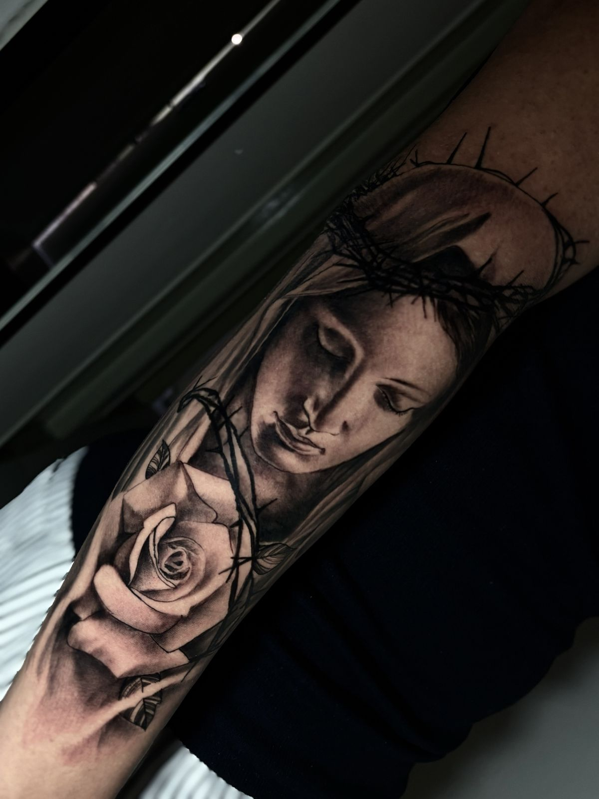
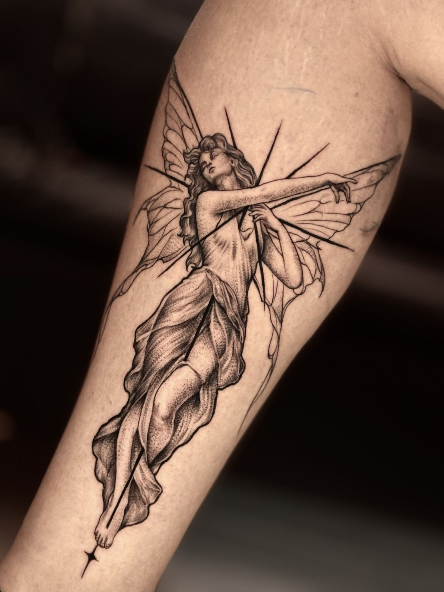

Amostra de direção · não é o site final
Realismo preto e cinza · São Paulo

Proteção que se carrega em silêncio.
02 — Detalhe
Realismo se julga de perto: a transição do cinza, o ponto que vira pele. No site, o visitante amplia qualquer peça sem sair da página.

passe o mouse · toque e segure no celular03 — Identidade
O verde entra em dose pequena: fio, sublinhado, estado ativo. Em área grande vira clínica; em fio fino, vira instrumento. O metálico não é cor, é gradiente.
Display · Bodoni Moda
Realismo
Serifada de alto contraste. A peça de galeria.
Técnica · IBM Plex Mono
ANTEBRAÇO · 22 CM · 2 SESSÕES
Monoespaçada para dados. É o que diz precisão sem escrever a palavra.
Corpo · Inter
Cada projeto é desenhado para o seu corpo e tatuado em sessão exclusiva.
Neutra, para o texto corrido não competir com a obra.
Próximo passo: migrar o site para Astro com esta pele, rolagem suave e as páginas por projeto. A imersão completa depende das fotos novas.
Rever do começoEtapa 1 de 7 · direção visual